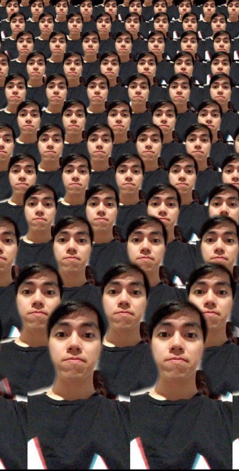
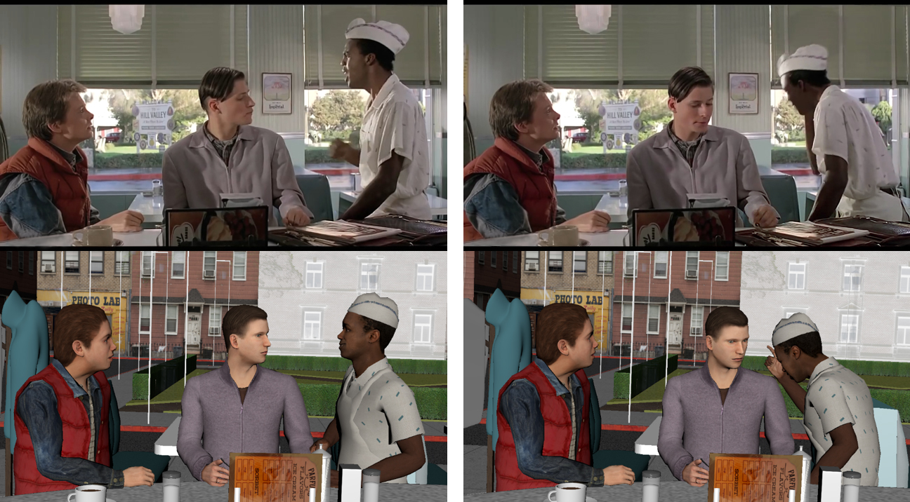

|
|
|

|
Kwanggyoon Edward Seo
PhD candidate
KAIST
Daejeon, Republic of Korea
skg1023 at kaist.ac.kr
[GitHub]
[CV]
|
I am currently pursuing PhD at GSCT KAIST, where I am advised by Prof. Junyong Noh.
My research interests are in image manipulation, computational photography, deep learning, and graphics.
Research
|

|
Cinematography Generation using a Reference Video
Kwanggyoon Seo, Sanghun Park, Jungeun Yoo, Jaedong Kim, Dawon Lee, Junyong Noh
In Pacific Graphics, 2019. Poster
[Poster]
[Webpage]
|
|